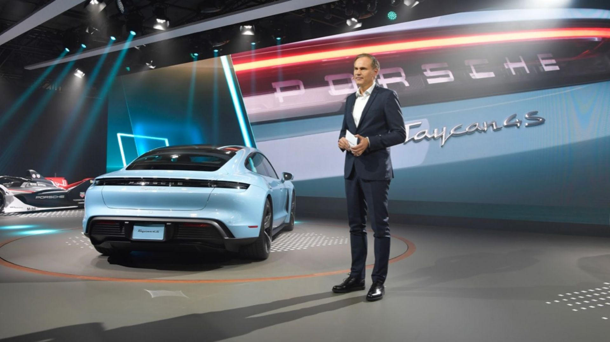
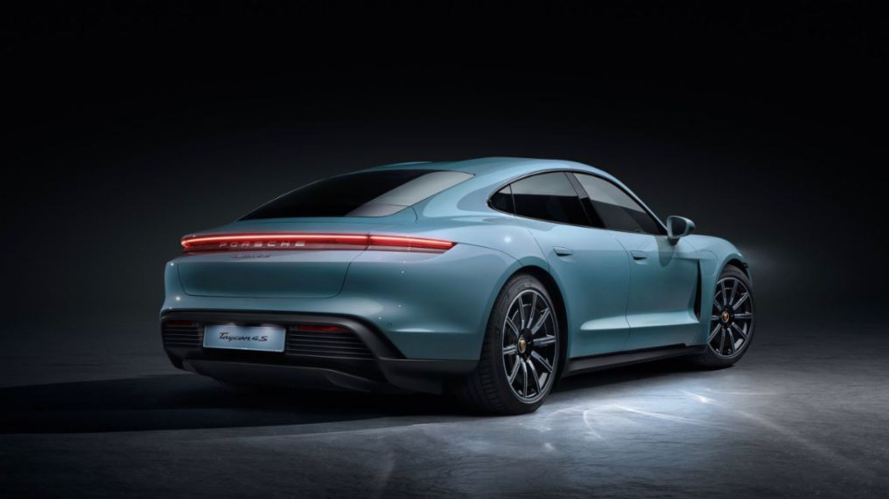

Porsche Taycan празднует свою премьеру в США на автосалоне в Лос-Анджелесе. Полностью электрический четырёхдверный спортивный седан предлагает производительность и возможности подключения, ожидаемые от Porsche, в сочетании с повседневным удобством использования. Высокоразвитые методы производства и возможности Taycan устанавливают новые стандарты в области устойчивого развития и цифровизации. Центральное место на стенде Porsche займет новый Taycan 4S, который теперь станет отправной точкой линейки, которая до сих пор состояла только из Taycan Turbo и Taycan Turbo S. Taycan 4S доступен с двумя типоразмерами батарей: аккумулятор Performance выдаёт до 390 кВт (530 л.с.; общее потребление электроэнергии 26,2 кВт*ч / 100 км; выбросы CO2 в совокупности 0 г/км (по состоянию на август 2020)), в то время как аккумулятор Performance Plus выдает до 420 кВт (571 л.с.; совокупное потребление электричества 27,0 кВтч/100 км; выбросы CO2 в совокупности 0 г/км (по состоянию на август 2020)).
“Год назад мы представили новое поколение 911 в Лос-Анджелесе”, - говорит Оливер Блюм, председатель исполнительного совета Porsche AG. “Теперь мы следим за Taycan – первым полностью электрическим спортивным автомобилем от Porsche. Калифорния была как второй дом для Porsche на протяжении многих десятилетий. Именно здесь находится самая большая в мире база поклонников 911. С Taycan мы связываем наше прошлое с будущим и продолжим историю успеха Porsche”.
В дополнение к Taycan, Porsche также выбрала автосалон в Лос-Анджелесе в качестве места для американской премьеры нового Macan Turbo. Мощность 324 кВт (440 л.с.; общий расход топлива 9,8 л/100 км; выбросы CO2 224 г/км) обеспечивает ему статус флагмана среди спортивных компактных внедорожников Porsche. Параллельно с дебютом Porsche в Формуле E 22 и 23 ноября 2019 года на автосалоне в Лос-Анджелесе также будет представлен Porsche 99X Electric, первый полностью электрический гоночный автомобиль марки.